# check if problematic packages are available
ggforce_available <- require(ggforce, quietly = TRUE)
ggrastr_available <- require(ggrastr, quietly = TRUE)
ggiraph_available <- require(ggiraph, quietly = TRUE)
suppressPackageStartupMessages({
## data manipulation
library(scales)
library(forcats)
library(dplyr)
library(tidyr)
## ggplot2 + extension packages
library(ggplot2)
if (ggforce_available) {
library(ggforce)
}
library(ggalt)
library(ggridges)
library(GGally)
library(ggsignif)
library(ggstatsplot)
library(gghighlight)
library(ggrepel)
library(ggtext)
library(ggnewscale)
if (ggrastr_available) {
library(ggrastr)
}
library(scattermore)
library(directlabels)
## packages to combine multiple figures
library(patchwork)
library(cowplot)
## packages for interactive graphics
library(plotly)
if (ggiraph_available) {
library(ggiraph)
}
## color packages
library(RColorBrewer)
library(circlize)
library(colorspace)
## other packages
library(sessioninfo)
library(fueleconomy)
})Intermediate ggplot2 - tips and tricks
In this document, we have made an attempt to collect useful “tips and tricks” related to the use of ggplot2 and associated packages. It does not aim to provide a general introduction to ggplot2 - for that, see e.g. the following resources:
- The
ggplot2website and cheat sheet - The
ggplot2book - A list of
ggplot2extensions
The different sections below are mostly independent from each other, and cover different aspects of adjusting ggplot objects.
Load packages
A quick look at the data
We will use three different data sets to illustrate the tips and tricks in this document. The first one comes from the fueleconomy package, and provides fuel economy data from the EPA between the years 1985 and 2015. We subset the data to only the vehicles from the year 2000 or later.
(vehicles <- vehicles %>%
dplyr::filter(year >= 2000))# A tibble: 16,649 × 12
id make model year class trans drive cyl displ fuel hwy cty
<dbl> <chr> <chr> <dbl> <chr> <chr> <chr> <dbl> <dbl> <chr> <dbl> <dbl>
1 16573 Acura 3.2CL 2001 Compact Ca… Auto… Fron… 6 3.2 Prem… 27 17
2 17489 Acura 3.2CL 2002 Compact Ca… Auto… Fron… 6 3.2 Prem… 27 17
3 18458 Acura 3.2CL 2003 Compact Ca… Manu… Fron… 6 3.2 Prem… 26 17
4 18459 Acura 3.2CL 2003 Compact Ca… Auto… Fron… 6 3.2 Prem… 27 17
5 15871 Acura 3.2TL 2000 Midsize Ca… Auto… Fron… 6 3.2 Prem… 27 17
6 16734 Acura 3.2TL 2001 Midsize Ca… Auto… Fron… 6 3.2 Prem… 27 17
7 17664 Acura 3.2TL 2002 Midsize Ca… Auto… Fron… 6 3.2 Prem… 27 17
8 18629 Acura 3.2TL 2003 Midsize Ca… Auto… Fron… 6 3.2 Prem… 27 17
9 15872 Acura 3.5RL 2000 Midsize Ca… Auto… Fron… 6 3.5 Prem… 22 16
10 16735 Acura 3.5RL 2001 Midsize Ca… Auto… Fron… 6 3.5 Prem… 22 16
# ℹ 16,639 more rowsThe second data set is provided with the ggplot2 package, and contains data on a set of diamonds.
diamonds# A tibble: 53,940 × 10
carat cut color clarity depth table price x y z
<dbl> <ord> <ord> <ord> <dbl> <dbl> <int> <dbl> <dbl> <dbl>
1 0.23 Ideal E SI2 61.5 55 326 3.95 3.98 2.43
2 0.21 Premium E SI1 59.8 61 326 3.89 3.84 2.31
3 0.23 Good E VS1 56.9 65 327 4.05 4.07 2.31
4 0.29 Premium I VS2 62.4 58 334 4.2 4.23 2.63
5 0.31 Good J SI2 63.3 58 335 4.34 4.35 2.75
6 0.24 Very Good J VVS2 62.8 57 336 3.94 3.96 2.48
7 0.24 Very Good I VVS1 62.3 57 336 3.95 3.98 2.47
8 0.26 Very Good H SI1 61.9 55 337 4.07 4.11 2.53
9 0.22 Fair E VS2 65.1 61 337 3.87 3.78 2.49
10 0.23 Very Good H VS1 59.4 61 338 4 4.05 2.39
# ℹ 53,930 more rowsThe third data set is the iris data set, which contains measurements of petal and sepal length and width for 150 iris flowers of different species.
head(iris) Sepal.Length Sepal.Width Petal.Length Petal.Width Species
1 5.1 3.5 1.4 0.2 setosa
2 4.9 3.0 1.4 0.2 setosa
3 4.7 3.2 1.3 0.2 setosa
4 4.6 3.1 1.5 0.2 setosa
5 5.0 3.6 1.4 0.2 setosa
6 5.4 3.9 1.7 0.4 setosaDefining a general theme
Before we start making plots, we define a theme that we will apply to the plots that we generate, when applicable. There are many ways of doing this - arguably the most straightforward is to assign the theme-related parts of a ggplot call to a variable, and add this variable to all subsequent plots.
## Define theme variable
ggp <- theme_bw() +
theme(axis.text = element_text(size = 11),
axis.title = element_text(size = 12),
strip.text = element_text(size = 12),
title = element_text(size = 13))
## Use in any ggplot (take care to put it in the right position in the call
## if the plot itself defines theme aspects)
ggplot(vehicles, aes(x = fuel)) +
geom_bar() + coord_flip() +
ggpIt is also possible to set the default theme that is used for all plots in the session. For example, to make theme_bw() the default theme, we could do:
old <- theme_set(theme_bw())ggplot2 also contains functions for replacing specific elements of a theme, see here for an overview.
Changing order of factor levels with the forcats package
In this section, we will illustrate how to use the forcats package to reorder the levels of a factor “on the fly”. Arguably, this is not strictly (gg)plot related, and it can be applied to any factor; however, it is often useful to be able to reorder factor levels to obtain the most informative graphical representation of a data set.
We start with a basic bar plot.
ggplot(vehicles, aes(x = fuel)) +
geom_bar() +
coord_flip() +
ggp
Order by frequency
The fct_infreq function will order the factor levels by their frequency.
ggplot(vehicles, aes(x = fct_infreq(fuel))) +
geom_bar() +
coord_flip() +
ggpOrder by their first appearance in the data
The fct_inorder function will order the factor levels by the order they appear in the data set.
ggplot(vehicles, aes(x = fct_inorder(fuel))) +
geom_bar() +
coord_flip() +
ggpLump together rare factor levels
Sometimes we have a large number of factor levels, many of which are very rare. The fct_lump_* set of functions can be used to group together rare levels into an “Other” category. Here we illustrate the use of the fct_lump_n function, which lumps together all levels except for the n most frequent ones.
ggplot(vehicles, aes(x = fct_infreq(fct_lump_n(fuel, n = 3,
other_level = "Other")))) +
geom_bar() +
coord_flip() +
ggpReorder one factor by the values of another variable
The fct_reorder function can be used to reorder the levels of a factor by the value of another variable.
ggplot(vehicles %>% group_by(class) %>% summarize(median_hwy = median(hwy)),
aes(x = fct_reorder(class, median_hwy), y = median_hwy)) +
geom_col() +
coord_flip() +
ggp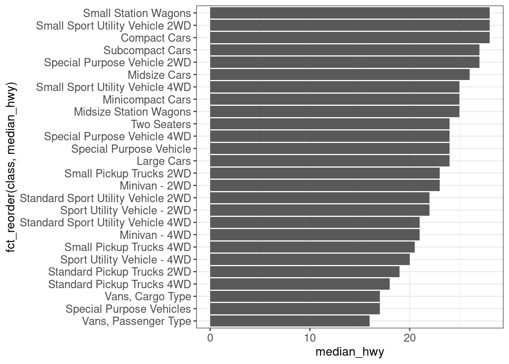
ggplot(vehicles %>% group_by(class) %>% summarize(median_hwy = median(hwy)),
aes(x = fct_reorder(class, median_hwy), y = median_hwy)) +
geom_point() +
coord_flip() +
ggp## Without prior aggregation - show all points, but order levels by median hwy
ggplot(vehicles,
aes(x = fct_reorder(class, hwy, .fun = median), y = hwy)) +
geom_point() +
geom_boxplot(alpha = 0, color = "red") +
coord_flip() +
ggpFaceting
Faceting splits a plot into multiple panels according to the value of a given variable. There are several faceting function in ggplot2, and additional ones provided in extension packages to address missing functionality.
facet_wrap
The facet_wrap function wraps a sequence of panels into a 2-dimensional layout. We can set the number of rows or columns to split the panels over.
## Default
ggplot(vehicles, aes(x = hwy, y = cty)) +
geom_point() +
facet_wrap(~ fct_lump_n(fuel, n = 3, other_level = "Other")) +
ggp## Set number of rows
ggplot(vehicles, aes(x = hwy, y = cty)) +
geom_point() +
facet_wrap(~ fct_lump_n(fuel, n = 3, other_level = "Other"), nrow = 1) +
ggpBy default, the x- and y-axes are shared between the panels. The scales argument can be used to set either or both of them to be “free” (i.e., panel-specific). Setting scales = "free" decouples both the x- and y-axes, setting it to "free_x" or "free_y" decouples only one of the axes.
ggplot(vehicles, aes(x = hwy, y = cty)) +
geom_point() +
facet_wrap(~ fct_lump_n(fuel, n = 3, other_level = "Other"),
scales = "free") +
ggp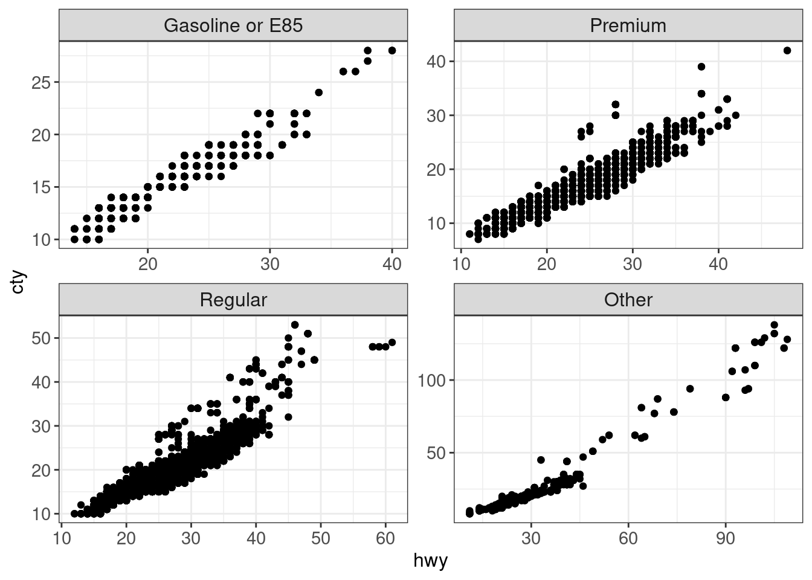
facet_grid
The facet_grid function places the set of panels in a matrix layout, where each dimension is determined by a given variable. It is typically most useful when we want to stratify by two discrete variables.
ggplot(vehicles, aes(x = hwy, y = cty)) +
geom_point() +
facet_grid(fct_lump_n(class, n = 3) ~
fct_lump_n(fuel, n = 3, other_level = "Other")) +
ggp
We can set scales = "free" also here, but note that it will affect the entire rows/columns in the same way (i.e., panels are not completely decoupled).
ggplot(vehicles, aes(x = hwy, y = cty)) +
geom_point() +
facet_grid(fct_lump_n(class, n = 3) ~
fct_lump_n(fuel, n = 3, other_level = "Other"),
scales = "free") +
ggpFaceting bar plots with different numbers of categories in each facet
Faceting with bar plots may require extra attention, if not all facets contain the same set of categories.
Using facet_wrap with scales = "fixed" leaves a missing bar for empty categories.
ggplot(vehicles, aes(x = fct_lump_n(make, n = 3))) +
geom_bar() +
facet_wrap(~ fct_lump_n(fuel, n = 3, other_level = "Other"),
scales = "fixed", nrow = 1) +
ggpUsing facet_wrap with scales = "free" doesn’t leave empty space, but the bars are of different width.
ggplot(vehicles, aes(x = fct_lump_n(make, n = 3))) +
geom_bar() +
facet_wrap(~ fct_lump_n(fuel, n = 3, other_level = "Other"),
scales = "free", nrow = 1) +
ggpThe facet_grid function lets us adjust the space allocated to each facet, in order to keep the bar widths the same but not leave empty space for missing categories, but keeps the y-axis the same across the panels.
ggplot(vehicles, aes(x = fct_lump_n(make, n = 3))) +
geom_bar() +
facet_grid(~ fct_lump_n(fuel, n = 3, other_level = "Other"),
scales = "free", space = "free") +
ggpFinally, the facet_row function from the ggforce package lets us adjust the space allocated to each facet and at the same time use a free y-axis.
ggplot(vehicles, aes(x = fct_lump_n(make, n = 3))) +
geom_bar() +
facet_row(~ fct_lump_n(fuel, n = 3, other_level = "Other"),
scales = "free", space = "free") +
ggpShowing all the data as ‘background’ in each facet
Sometimes we would like to show all the data as the “background” in each facet, while highlighting the points corresponding to the specific facet. This can be achieved in several ways. A neat trick is to add an additional layer using a modified data set where the faceting variable is removed:
ggplot(vehicles, aes(x = hwy, y = cty)) +
geom_point(data = transform(vehicles, fuel = NULL), colour = "grey80") +
geom_point() +
facet_wrap(~ fct_lump_n(fuel, n = 3, other_level = "Other"),
scales = "free") +
ggpAnother option is to use the gghighlight package. The package can be used to highlight points in a single panel:
ggplot(vehicles %>% mutate(
fuel_lumped = fct_lump_n(fuel, n = 3, other_level = "Other")),
aes(x = hwy, y = cty)) +
geom_point(aes(color = fuel_lumped)) +
gghighlight(fuel_lumped == "Premium") +
ggpWarning: Tried to calculate with group_by(), but the calculation failed.
Falling back to ungrouped filter operation...label_key: fuel_lumpedToo many data points, skip labelingOr to highlight all points, and additionally facet:
ggplot(vehicles %>% mutate(
fuel_lumped = fct_lump_n(fuel, n = 3, other_level = "Other")),
aes(x = hwy, y = cty)) +
geom_point(aes(color = fuel_lumped)) +
gghighlight() +
facet_wrap(~ fuel_lumped, scales = "free") +
ggplabel_key: fuel_lumpedToo many data points, skip labeling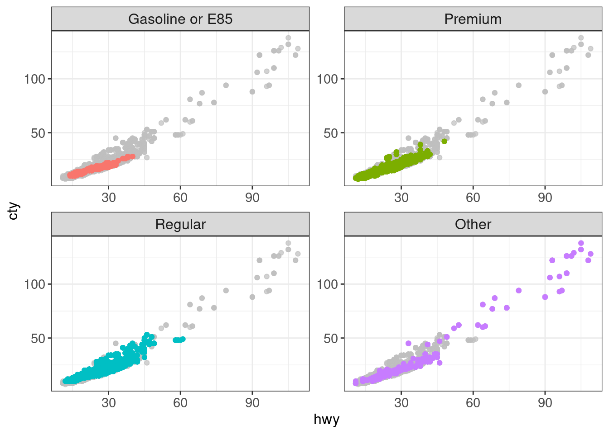
If the number of highlighted points is not too large, gghighlight will add a label for each point.
ggplot(vehicles %>% mutate(
fuel_lumped = fct_lump_n(fuel, n = 3, other_level = "Other")),
aes(x = hwy, y = cty)) +
geom_point() +
gghighlight(hwy - cty > 15 | ((abs(hwy - 60) < 10) & (abs(cty - 75) < 10)),
label_key = make, max_highlight = 25) +
ggp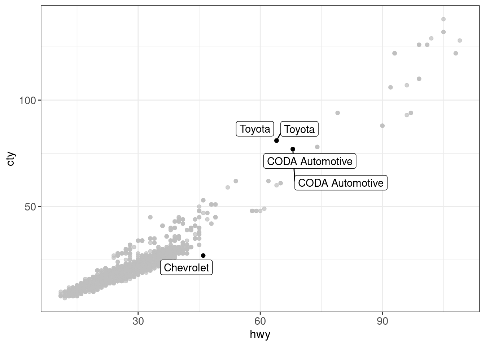
Adjusting widths of bars in bar plots
We saw above how to adjust the widths of panels in faceted bar plots. Here, we will instead see how to adjust the widths of individual bars, when displayed side-by-side in a single panel.
The default layout of a bar plot where each bar is further split by a variable is to stack the components on top of each other:
ggplot(vehicles, aes(x = fct_lump_n(fuel, n = 3, other_level = "Other"),
fill = fct_lump_n(make, n = 3))) +
geom_bar() +
ggpWe can also get the bars side-by-side by setting the position argument (either position = "dodge" or position = position_dodge()). However, if there are different numbers of subcategories, the bars will have different widths.
ggplot(vehicles, aes(x = fct_lump_n(fuel, n = 3, other_level = "Other"),
fill = fct_lump_n(make, n = 3))) +
geom_bar(position = position_dodge()) +
ggpWe can use the position_dodge2() function to preserve the widths of the bars. However, the categories will be centered for each value on the x-axis, which means that the same bar will not always appear in the same relative position.
ggplot(vehicles, aes(x = fct_lump_n(fuel, n = 3, other_level = "Other"),
fill = fct_lump_n(make, n = 3))) +
geom_bar(position = position_dodge2(preserve = "single")) +
ggpIn order to keep the widths of the bars and at the same time place them in consistent relative positions for each value on the x-axis, one way is to first summarize the data, making sure to represent the empty categories with a count of zero, and then using the code in the previous chunk to preserve the widths of the bars.
## Side-by-side bar plot with consistent width and position
ggplot(vehicles %>% mutate(fuel = fct_lump_n(fuel, n = 3, other_level = "Other"),
make = fct_lump_n(make, n = 3)) %>%
count(fuel, make) %>%
complete(fuel = unique(fuel), make = unique(make),
fill = list(n = 0)),
aes(x = fuel, y = n, fill = make)) +
geom_bar(stat = "identity", position = position_dodge2(preserve = "single")) +
ggp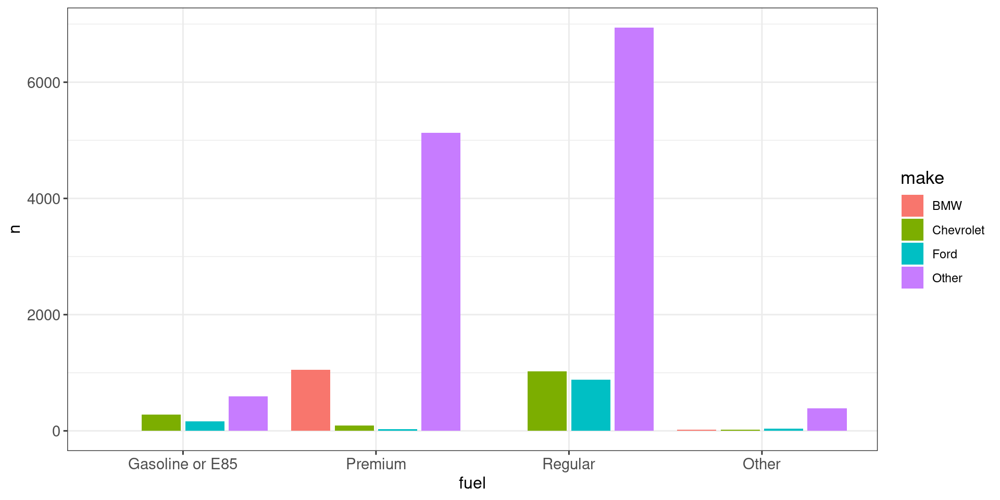
Rastering layers to limit the size of plots with many elements
A common issue for plots that contain many elements, such as a scatter plot with thousands of genes, is that the resulting plot file may get large and slow to display, especially when saved a vector-based graphics device like pdf or svg.
A possible solution to this problem is to render the plot into a bitmap image by saving it to a bitmap-based graphics device like png or jpeg. However, a disadvantage of this approach is that all elements will be rendered into that image and no adjustments to individual elements can be done afterwards, like for example increasing the text size of the axis titles.
get_filesize_kb <- function(plotobj, outformat = c("pdf", "png")) {
# helper function that returns the size of a plot
# when saved to a `outformat` file in kilo-bytes
outformat <- match.arg(outformat)
tf <- tempfile(fileext = paste0(".", outformat))
ggsave(filename = tf, plot = plotobj, width = 8, height = 8)
filesize <- file.info(tf)$size
unlink(tf)
cat(sprintf("%s-file of size %.1f kb\n", outformat, filesize / 1000))
return(invisible(filesize))
}
## normal plot with many elements
p0 <- ggplot(diamonds, aes(carat, price)) +
geom_point(size = 0.2) +
ggp
get_filesize_kb(p0, "pdf")pdf-file of size 1456.6 kbget_filesize_kb(p0, "png")png-file of size 633.8 kbUsing ggrastr
A more elegant solution is provided by the ggrastr package, that allows to raster just the problematic layer, while keeping the remaining layers as vectors, for example using the geom_point_rast function:
## ggrastr::geom_*_rastr layers
p1 <- ggplot(diamonds, aes(carat, price)) +
geom_point_rast(size = 0.2, raster.dpi = 200) +
ggp
p1
get_filesize_kb(p1, "pdf")or by using rasterise, which can wrap any other layer or even whole plots, and automatically rasterize all layers of certain types (layers argument). The resolution of the raster images can be controlled with dpi (or raster.dpi above):
## ggrastr::rasterise() wrapper
## ... around the whole plot
p2 <- rasterise(p1, layers = c("Point", "Title")) # raster all layers of given types
get_filesize_kb(p2, "pdf")
## ... around a specific layer
p3 <- ggplot(diamonds, aes(carat, price)) +
rasterise(geom_point(size = 0.2), dpi = 200) +
ggp
p3
get_filesize_kb(p3, "pdf")Using scattermore
The scattermore uses a conceptually similar approach, but is optimized for very large numbers of points (think many millions). It provides two functions:
geom_scattermore()behaves fully as any other ggplot2 geometrical layergeom_scattermost()that plots even faster at the expense of bypassing most of the ggplot functionality (e.g. you need to provide a two-colom data frame directly to the function)
ggplot(diamonds, aes(carat, price, color = clarity)) +
geom_scattermore(pointsize = 0.8) +
ggp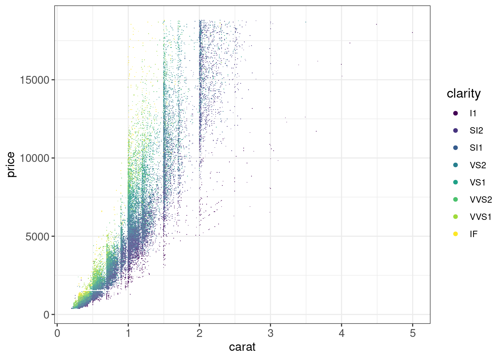
# geom_scattermost ignores data and aesthetic mappings
# -> need to provide data frame and if desired color vector
ggplot(diamonds) +
geom_scattermost(xy = as.data.frame(diamonds[, c('carat', 'price')]),
pointsize = 0.4) +
ggp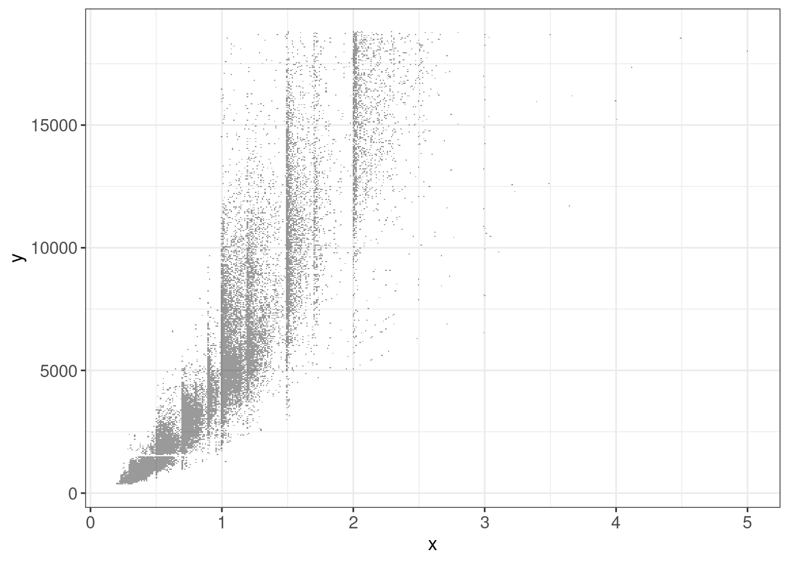
Changing scales for axes
In this section, we illustrate how change the axis ranges or tick labels of our plots from the default values.
Axes with percent (%) values
In some cases the displayed values are fractions, that we would like to express instead as percentages. This can be achieved using the scales package:
## scales::percent will multiply the values by 100 and add a % sign
ggplot(vehicles, aes(x = fct_lump_n(fuel, n = 3, other_level = "Other"),
fill = fct_lump_n(make, n = 3))) +
geom_bar(position = "fill") +
scale_y_continuous(labels = scales::percent) +
labs(y = "Percentage") +
ggp## scales::percent_format has more arguments
ggplot(vehicles, aes(x = fct_lump_n(fuel, n = 3, other_level = "Other"),
fill = fct_lump_n(make, n = 3))) +
geom_bar(position = "fill") +
scale_y_continuous(labels = scales::percent_format(scale = 100,
accuracy = 0.01)) +
labs(y = "Percentage") +
ggpLimit axis range
ggplot provides several ways to limit the range of the axes, and the effect on the plot will depend on which approach is chosen. More specifically, the xlim() and ylim() functions will replace all values that are out of range by NA, while e.g. coord_cartesian(xlim = ...) keeps all the data for any calculations, and just adjusts the displayed range. In addition to appearance, the distinction is important e.g. when calculating summary statistics, smoothing curves etc from the data.
## xlim()/ylim() will replace out-of-range data by NA
ggplot(vehicles, aes(x = hwy, y = cty)) +
geom_point(size = 8, shape = 1) +
xlim(11, 59) +
geom_smooth() +
ggp`geom_smooth()` using method = 'gam' and formula = 'y ~ s(x, bs = "cs")'Warning: Removed 46 rows containing non-finite outside the scale range
(`stat_smooth()`).Warning: Removed 46 rows containing missing values or values outside the scale range
(`geom_point()`).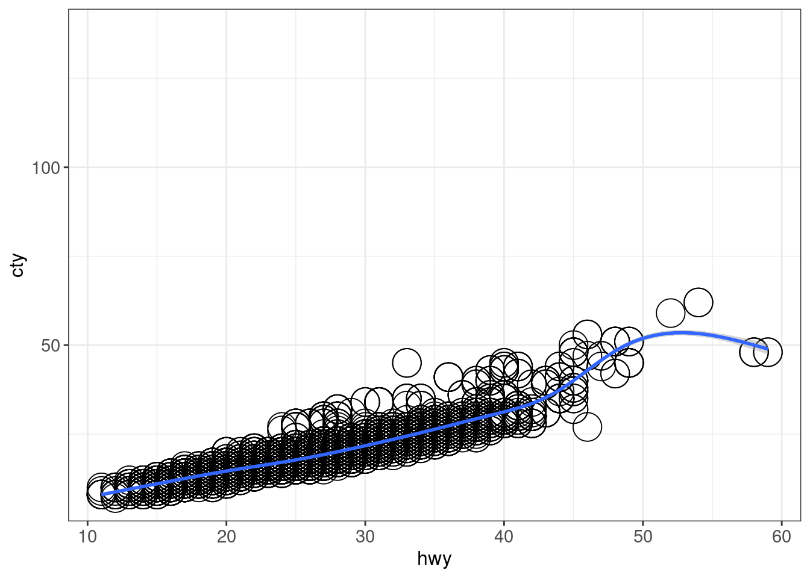
## coord_cartesian() just sets the displayed range
ggplot(vehicles, aes(x = hwy, y = cty)) +
geom_point(size = 8, shape = 1) +
coord_cartesian(xlim = c(11, 59)) +
geom_smooth() +
ggp`geom_smooth()` using method = 'gam' and formula = 'y ~ s(x, bs = "cs")'Interactive plots
Interactive plots can be very helpful for exploratory purposes, and can be directly embedded in R Markdown or Quarto reports. However, it is worth noting that they do inflate the size of the report (sometimes dramatically, if the number of points is very large). Here we will illustrate a few different approaches to making interactive “ggplot-like” graphics.
(gg)plotly
First, we use the ggplotly function from the plotly package, which can be used to turn a ggplot object into an interactive plot.
## Turn a ggplot into an interactive plot with ggplotly
ggplotly(
ggplot(vehicles %>% dplyr::filter(year == 2005),
aes(x = hwy, y = cty, label = make)) +
geom_point() +
ggp,
tooltip = c("label", "x", "y")
)Note that plotly can also be used to directly generate advanced interactive plots, without the intermediate ggplot object.
ggiraph
Another option for making interactive graphs is to use the ggiraph package, which provides dedicated interactive layers.
girafe(ggobj = ggplot(vehicles) +
geom_point_interactive(aes(x = hwy, y = cty,
tooltip = make, data_id = make)) +
ggp)Titles, subtitles and captions
ggplot2 provides many ways of labeling your plot.
ggplot(vehicles %>% dplyr::filter(year == 2005), aes(x = hwy, y = cty)) +
geom_point() +
labs(title = "This is the title",
subtitle = "And a subtitle",
caption = "And the caption goes here",
x = "Highway fuel economy (mpg)",
y = "City fuel economy (mpg)") +
ggp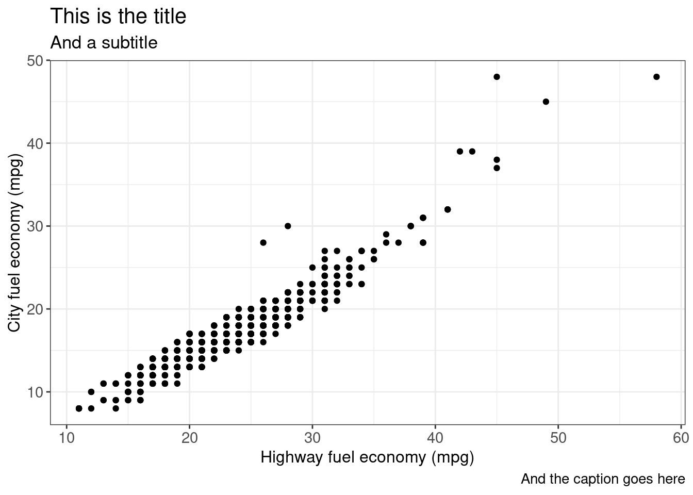
Note that not all of these are compatible with interactive plots (subtitle and caption):
ggplotly(
ggplot(vehicles %>% dplyr::filter(year == 2005), aes(x = hwy, y = cty)) +
geom_point() +
labs(title = "This is the title",
subtitle = "And a subtitle",
caption = "And the caption goes here",
x = "Highway fuel economy (mpg)",
y = "City fuel economy (mpg)") +
ggp
)Adding statistical information to plots
- TODO - e.g. using
ggsignif,ggstatsplot
Adding text and annotation
Sometimes it is useful to outline a subset of the observations, enclosing them in an ellipse (ggforce::geom_mark_circle) or a polygon (ggalt::geom_encircle):
## ggforce
ggplot(vehicles %>% dplyr::filter(year == 2005), aes(x = hwy, y = cty)) +
geom_point() +
geom_mark_ellipse(aes(label = "Interesting points",
description = "These points are interesting",
filter = (cty - hwy) > 1),
fill = "pink") +
ggp## ggalt
ggplot(iris, aes(x = Petal.Width, y = Sepal.Width, colour = Species)) +
geom_point() +
geom_encircle(aes(group = Species)) +
ggpThe gghighlight::gghighlight function allows to highlight observations that fulfill specific criteria for most geoms:
## gghighlight
ggplot(diamonds %>% group_by(carat, cut) %>% summarize(mean_price = mean(price)),
aes(x = carat, y = mean_price, color = cut)) +
geom_line() +
gghighlight(cut %in% c("Good", "Ideal")) +
facet_wrap(~ cut) +
ggp`summarise()` has grouped output by 'carat'. You can override using the
`.groups` argument.Warning: Tried to calculate with group_by(), but the calculation failed.
Falling back to ungrouped filter operation...label_key: cut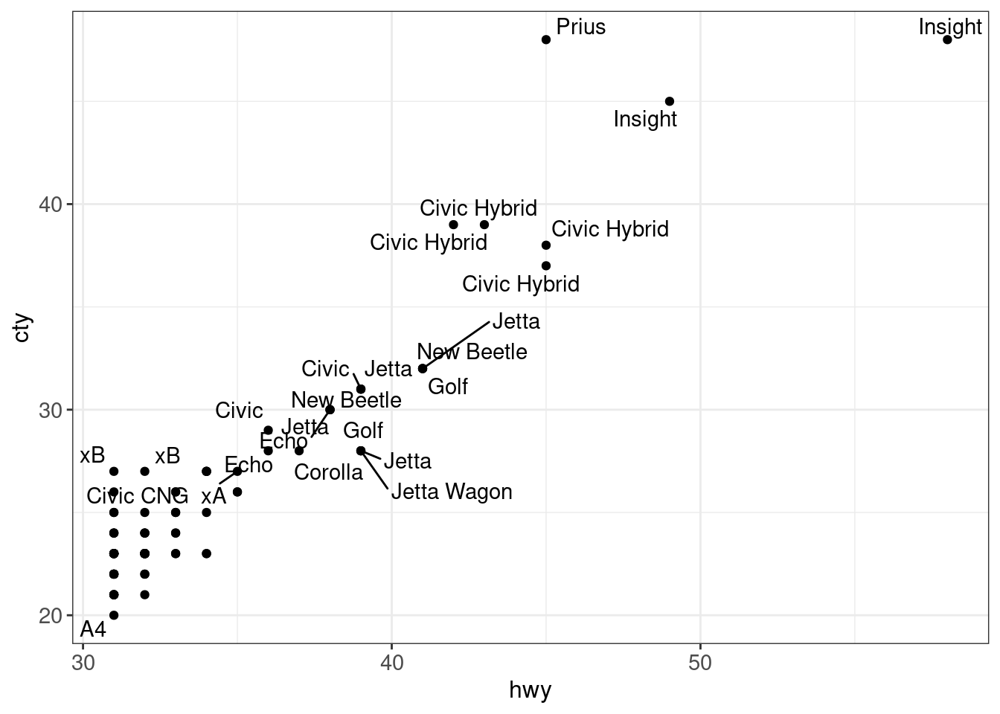
ggrepel is useful to add non-overlapping labels to observations in a scatter plot. geom_text_repel just adds the text labels, while geom_label_repel adds a filled background around each label:
ggplot(vehicles %>% dplyr::filter(year == 2005 & hwy > 30), aes(x = hwy, y = cty)) +
geom_point() +
geom_text_repel(aes(label = model)) +
ggpWarning: ggrepel: 59 unlabeled data points (too many overlaps). Consider
increasing max.overlaps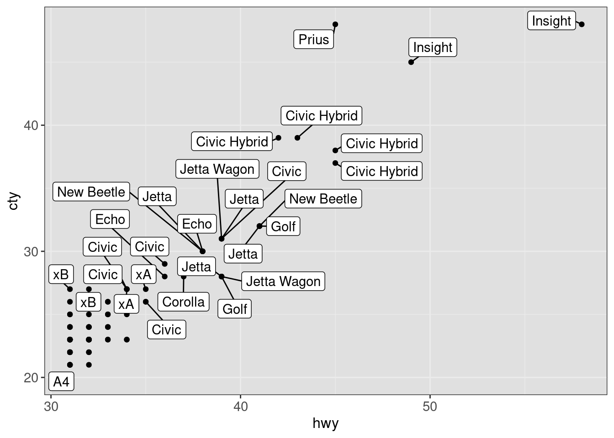
ggplot(vehicles %>% dplyr::filter(year == 2005 & hwy > 30), aes(x = hwy, y = cty)) +
geom_point() +
geom_label_repel(aes(label = model)) +
ggp +
theme(panel.background = element_rect(fill = "gray88"))Warning: ggrepel: 74 unlabeled data points (too many overlaps). Consider
increasing max.overlaps
Note that ggrepel will not show labels overlapping too many other things. This can be controlled with the max.overlaps argument (by default, this is set to 10). We can also instruct ggrepel to always draw a line to the corresponding point from a given label (even if they are very close) by setting
min.segment.length = 0.
ggplot(vehicles %>% dplyr::filter(year == 2005 & hwy > 30),
aes(x = hwy, y = cty)) +
geom_point() +
geom_label_repel(aes(label = model), max.overlaps = 25,
min.segment.length = 0) +
ggp +
theme(panel.background = element_rect(fill = "gray88"))Warning: ggrepel: 55 unlabeled data points (too many overlaps). Consider
increasing max.overlaps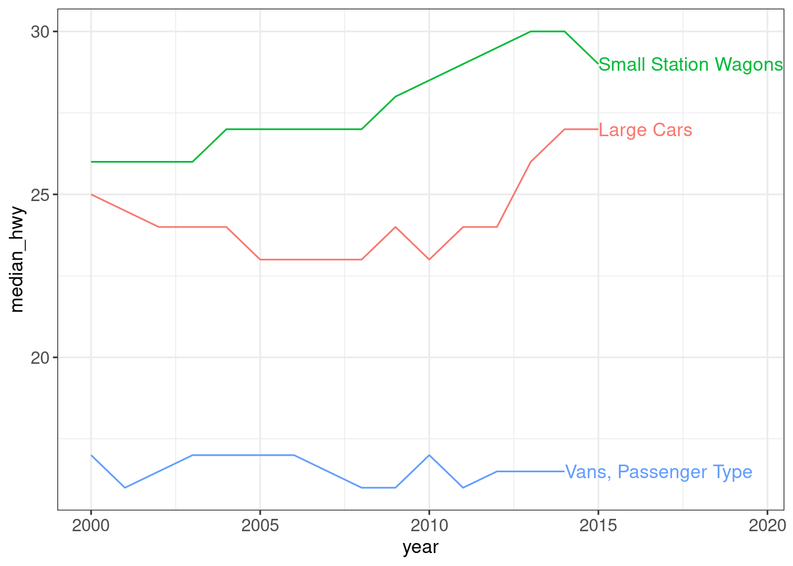
The directlabels package can be useful for adding direct labels to a plot, typically replacing a legend. Labels can be added e.g. at the last point, first point or both.
ggplot(vehicles %>%
dplyr::filter(class %in% c("Small Station Wagons", "Large Cars",
"Vans, Passenger Type")) %>%
dplyr::group_by(year, class) %>%
dplyr::summarize(median_hwy = median(hwy), .groups = "drop"),
aes(x = year, y = median_hwy, color = class)) +
geom_line() + scale_colour_discrete(guide = "none") +
scale_x_continuous(expand = expansion(add = c(1, 5.5))) +
geom_dl(aes(label = class), method = list(dl.combine("last.points")), cex = 0.8) +
ggpOther packages that are useful for annotation of graphs are geomtextpath, which allows adding curved text to ggplot objects, and ggtext, which provides improved support for text rendering (e.g. using markdown).
Here are some more tips for using annotations in ggplots: https://www.cararthompson.com/talks/user2022/.
Customizing legends
ggplot2 itself allows to control the placement of the legend in various ways.
Suppressing the legend
show.legend can be used to exclude a single layer from the legend. Other layers will be unaffected:
ggplot(vehicles, aes(hwy, cty, color = fuel)) +
geom_point(show.legend = FALSE) +
geom_point(inherit.aes = FALSE,
data = vehicles %>% dplyr::filter(make == "Ram"),
mapping = aes(hwy, cty, shape = model)) +
ggp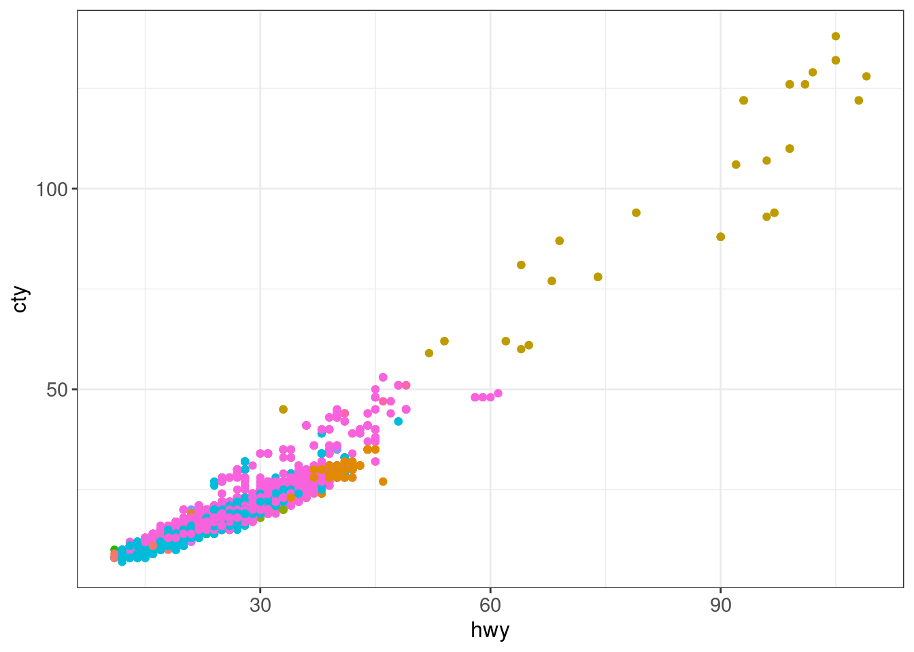
theme(legend.position = "none") completely suppresses the legend:
ggplot(vehicles, aes(hwy, cty, color = fuel)) +
geom_point() +
ggp +
theme(legend.position = "none")Legend position
In addition to "none" which completely suppresses the legend, theme(legend.position = "...") also understands "left", "top", "right" and "bottom" to control the legend position (outside of the plot):
## legend position (outside of plot)
## allowed values for the arguments legend.position are:
## "left", "top", "right", "bottom"
ggplot(vehicles, aes(hwy, cty, color = fuel)) +
geom_point() +
ggp +
theme(legend.position = "bottom")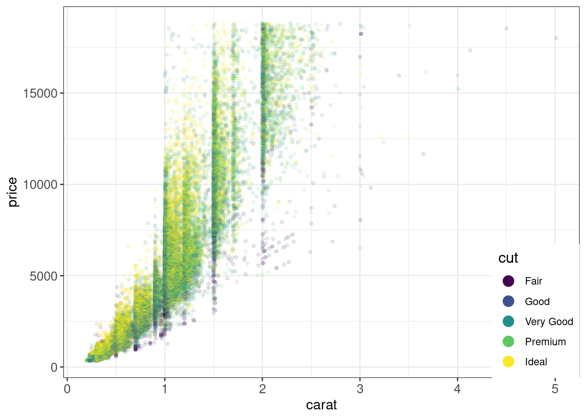
In order to place the legend inside the plot, we can use numerical coordinates for legend.position:
## move legend inside plot
## c(0,0) corresponds to the “bottom left” and
## c(1,1) corresponds to the “top right” position
ggplot(diamonds, aes(carat, price, color = cut)) +
geom_point(size = 1, alpha = 0.1) +
ggp +
theme(legend.position = "inside",
legend.position.inside = c(0.98, 0.02),
legend.justification = c(1, 0)) +
guides(color = guide_legend(override.aes = list(size = 4, alpha = 1)))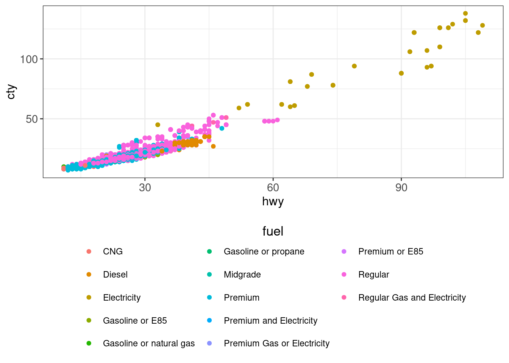
Customizing legend formatting
guides(... = guide_legend()) is useful to control or override legend formatting parameters, such as the number of rows or the transparency of plot symbols:
## number of rows (discrete scales)
ggplot(vehicles, aes(hwy, cty, color = fuel)) +
geom_point() +
ggp +
theme(legend.position = "bottom") +
guides(color = guide_legend(nrow = 5,
title.position = "top",
title.hjust = 0.5))## override graphical parameters
ggplot(diamonds, aes(carat, price, color = cut)) +
geom_point(size = 1, alpha = 0.1) +
ggp +
theme(legend.position = "bottom") +
guides(color = guide_legend(override.aes = list(size = 4, alpha = 1)))Specifying colors
There are many ways of specifying colors in ggplot2. Here we show a few examples.
Specifying color gradients using defined colors
## One-sided gradient
ggplot(vehicles %>% dplyr::filter(year == 2005),
aes(x = hwy, y = cty, color = cyl)) +
geom_point() +
scale_color_gradient(low = "white", high = "darkblue") +
ggp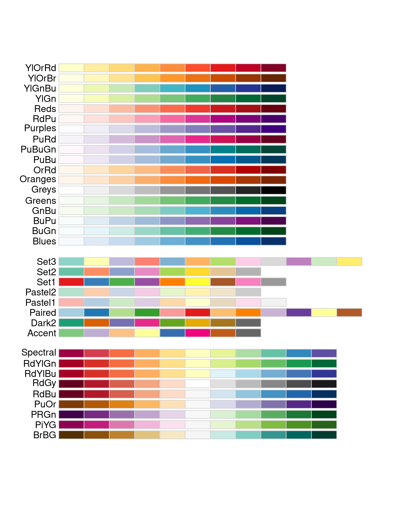
## Two-sided (divergent) gradient
ggplot(vehicles %>% dplyr::filter(year == 2005),
aes(x = hwy, y = cty, color = scale(cyl))) +
geom_point() +
scale_color_gradient2(low = "red", mid = "white", high = "darkblue",
midpoint = 0) +
ggp
## Custom gradient
ggplot(vehicles %>% dplyr::filter(year == 2005),
aes(x = hwy, y = cty, color = scale(cyl))) +
geom_point() +
scale_color_gradientn(colours = hcl.colors(9, "Spectral")) +
ggp
## Manual colors
ggplot(vehicles, aes(x = fct_lump_n(fuel, n = 3, other_level = "Other"),
fill = fct_lump_n(make, n = 3))) +
geom_bar(position = "fill") +
scale_fill_manual(values = c(BMW = "darkblue", Chevrolet = "red",
Ford = "forestgreen", Other = "grey85"),
name = "Make") +
ggp
Named color palettes
RColorBrewer comes with many discrete, sequential or divergent color palettes:
## Colors from existing palettes
## RColorBrewer palettes
display.brewer.all()
R also has many built-in palettes, available using the hcl.colors() function. These also include widely used contributed palettes such as viridis or many of ColorBrewer palettes (see available names using hcl.pals()):
hcl.colors(3, "Dark2")[1] "#C87A8A" "#6B9D59" "#5F96C2"hcl.pals() [1] "Pastel 1" "Dark 2" "Dark 3" "Set 2"
[5] "Set 3" "Warm" "Cold" "Harmonic"
[9] "Dynamic" "Grays" "Light Grays" "Blues 2"
[13] "Blues 3" "Purples 2" "Purples 3" "Reds 2"
[17] "Reds 3" "Greens 2" "Greens 3" "Oslo"
[21] "Purple-Blue" "Red-Purple" "Red-Blue" "Purple-Orange"
[25] "Purple-Yellow" "Blue-Yellow" "Green-Yellow" "Red-Yellow"
[29] "Heat" "Heat 2" "Terrain" "Terrain 2"
[33] "Viridis" "Plasma" "Inferno" "Rocket"
[37] "Mako" "Dark Mint" "Mint" "BluGrn"
[41] "Teal" "TealGrn" "Emrld" "BluYl"
[45] "ag_GrnYl" "Peach" "PinkYl" "Burg"
[49] "BurgYl" "RedOr" "OrYel" "Purp"
[53] "PurpOr" "Sunset" "Magenta" "SunsetDark"
[57] "ag_Sunset" "BrwnYl" "YlOrRd" "YlOrBr"
[61] "OrRd" "Oranges" "YlGn" "YlGnBu"
[65] "Reds" "RdPu" "PuRd" "Purples"
[69] "PuBuGn" "PuBu" "Greens" "BuGn"
[73] "GnBu" "BuPu" "Blues" "Lajolla"
[77] "Turku" "Hawaii" "Batlow" "Blue-Red"
[81] "Blue-Red 2" "Blue-Red 3" "Red-Green" "Purple-Green"
[85] "Purple-Brown" "Green-Brown" "Blue-Yellow 2" "Blue-Yellow 3"
[89] "Green-Orange" "Cyan-Magenta" "Tropic" "Broc"
[93] "Cork" "Vik" "Berlin" "Lisbon"
[97] "Tofino" "ArmyRose" "Earth" "Fall"
[101] "Geyser" "TealRose" "Temps" "PuOr"
[105] "RdBu" "RdGy" "PiYG" "PRGn"
[109] "BrBG" "RdYlBu" "RdYlGn" "Spectral"
[113] "Zissou 1" "Cividis" "Roma" The following code displays all palettes in hcl.colors() using code from example(hcl.colors)
hcl.swatch <- function(type = NULL, n = 7, nrow = 12,
border = if (n < 15) "black" else NA) {
palette <- hcl.pals(type)
cols <- sapply(palette, hcl.colors, n = n)
ncol <- ncol(cols)
nswatch <- min(ncol, nrow)
par(mar = rep(0.1, 4),
mfrow = c(1, min(5, ceiling(ncol/nrow))),
pin = c(1, 0.5 * nswatch),
cex = 0.7)
while (length(palette)) {
subset <- 1:min(nrow, ncol(cols))
plot.new()
plot.window(c(0, n), c(0, nrow + 1))
text(0, rev(subset) + 0.1, palette[subset], adj = c(0, 0))
y <- rep(subset, each = n)
rect(rep(0:(n-1), n), rev(y), rep(1:n, n), rev(y) - 0.5,
col = cols[, subset], border = border)
palette <- palette[-subset]
cols <- cols[, -subset, drop = FALSE]
}
par(mfrow = c(1, 1), mar = c(5.1, 4.1, 4.1, 2.1), cex = 1)
}
hcl.swatch()# hcl.swatch("qualitative")
# hcl.swatch("sequential")
# hcl.swatch("diverging")
# hcl.swatch("divergingx")We can use those named palettes in ggplot2 as follows:
ggplot(vehicles, aes(x = fct_lump_n(fuel, n = 3, other_level = "Other"),
fill = fct_lump_n(make, n = 3))) +
geom_bar(position = "fill") +
scale_fill_brewer(palette = "Set2", name = "Make") +
ggp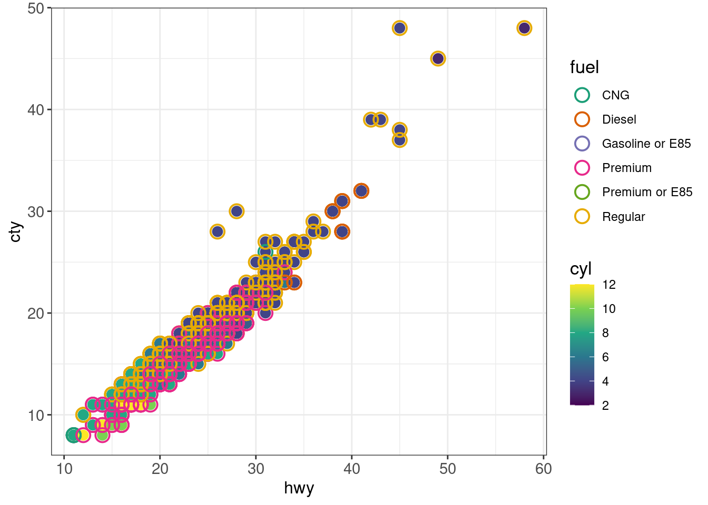
ggplot(vehicles, aes(x = fct_lump_n(fuel, n = 3, other_level = "Other"),
fill = fct_lump_n(make, n = 3))) +
geom_bar(position = "fill") +
scale_fill_brewer(palette = "Greens", name = "Make") +
ggp
## viridis palettes
## viridis_c - continuous
## viridis_b - binned
## viridis_d - discrete
ggplot(vehicles %>% dplyr::filter(year == 2005),
aes(x = hwy, y = cty, color = scale(cyl))) +
geom_point() +
scale_color_viridis_c() +
ggp
ggplot(vehicles, aes(x = fct_lump_n(fuel, n = 3, other_level = "Other"),
fill = fct_lump_n(make, n = 3))) +
geom_bar(position = "fill") +
scale_fill_viridis_d() +
ggp
Using multiple color scales for different layers
## multiple scales for color or fill: ggnewscale::new_scale
ggplot(vehicles %>% dplyr::filter(year == 2005),
aes(x = hwy, y = cty, color = cyl)) +
geom_point(size = 3) +
scale_color_viridis_c() +
new_scale("color") +
geom_point(aes(color = fuel), shape = 21, size = 4, stroke = 1) +
scale_color_brewer(palette = "Dark2") +
ggpCap color range
## - One way of doing it: limit color range +
## set color for out-of-range NA values
cols <- hcl.colors(8)
ggplot(diamonds, aes(x = carat, y = depth, color = price)) +
geom_point() +
scale_color_gradientn(colors = cols,
limits = c(min(diamonds$price), 10000),
na.value = cols[length(cols)]) +
ggp## Another way is to squish the out-of-bounds values to the nearest extreme
## using e.g. the scales::squish function (the default value of oob is
## scales::censor, which sets the values to NA as in the previous example)
ggplot(diamonds, aes(x = carat, y = depth, color = price)) +
geom_point() +
scale_color_gradientn(colors = cols,
limits = c(5000, 10000),
oob = scales::squish) +
ggp
Creating darker/lighter variants of a color
The functions in the colorspace package allow you to work with colors, for example create a darker or lighter variant of a color, using darken() or lighten:
# make the box plot outlines a bit darker than the fill
cols <- hcl.colors(nlevels(diamonds$clarity), "Dark2")
names(cols) <- levels(diamonds$clarity)
ggplot(diamonds, aes(x = clarity, y = price, color = clarity, fill = clarity)) +
geom_boxplot(outlier.shape = NA, linewidth = 1.2) +
scale_color_manual(values = colorspace::darken(cols, amount = 0.2)) +
scale_fill_manual(values = colorspace::lighten(cols, amount = 0.1)) +
ggp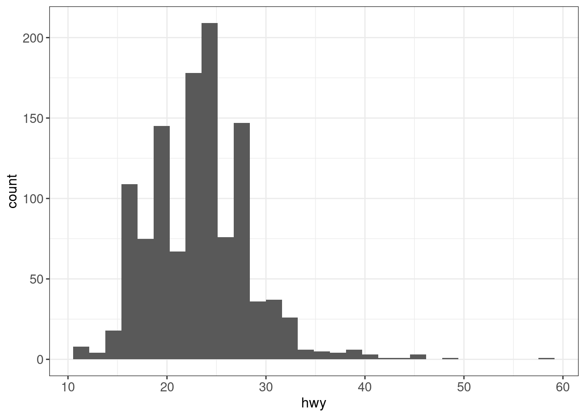
Using after_stat (previously ..*..)
(From here): ggplot2 has three stages of the data that you can map aesthetics from. The default is to map at the beginning, using the layer data provided by the user. The second stage is after the data has been transformed by the layer stat. The third and last stage is after the data has been transformed and mapped by the plot scales. The most common example of mapping from stat transformed data is the height of bars in geom_histogram(): the height does not come from a variable in the underlying data, but is instead mapped to the count computed by stat_bin(). In order to map from stat transformed data you should use the after_stat() function to flag that evaluation of the aesthetic mapping should be postponed until after stat transformation.
## This histogram code...
ggplot(vehicles %>% dplyr::filter(year == 2005),
aes(x = hwy)) +
geom_histogram(bins = 30) +
ggp
## ...is equivalent to
ggplot(vehicles %>% dplyr::filter(year == 2005),
aes(x = hwy, y = after_stat(count))) +
geom_histogram(bins = 30) +
ggp
## To get the density instead:
ggplot(vehicles %>% dplyr::filter(year == 2005),
aes(x = hwy, y = after_stat(density))) +
geom_histogram(bins = 30) +
ggp
## In percentage
ggplot(vehicles %>% dplyr::filter(year == 2005),
aes(x = hwy, y = after_stat(density))) +
geom_histogram(bins = 30) +
scale_y_continuous(labels = scales::percent) +
ggp
## Other transformations - scale so that max height = 1
ggplot(vehicles %>% dplyr::filter(year == 2005),
aes(x = hwy, y = after_stat(count/max(count)))) +
geom_histogram(bins = 30) +
ggp
Combining plot panels
Several packages are available for combining multiple independent ggplot objects into panels of a single figure. Here we illustrate two of these.
cowplot
With the cowplot package, figures are combined using the plot_grid() function. We first create a few plots that we will use for illustration.
g1 <- ggplot(vehicles,
aes(x = fct_lump_n(fuel, n = 3, other_level = "Other"),
fill = fct_lump_n(make, n = 3))) +
geom_bar(position = "fill") +
scale_fill_brewer(palette = "Set2", name = "Make") +
ggp
g2 <- ggplot(vehicles %>% dplyr::filter(year == 2005),
aes(x = hwy, y = cty, color = scale(cyl))) +
geom_point() +
scale_color_gradient2(low = "red", mid = "white", high = "darkblue",
midpoint = 0) +
ggp
g3 <- ggplot(vehicles %>% group_by(class) %>% summarize(mean_hwy = mean(hwy)),
aes(x = fct_reorder(class, mean_hwy), y = mean_hwy)) +
geom_point() +
coord_flip() +
ggpNext we use cowplot::plot_grid to combine g1 and g2 (without legend) into a single column.
(g12 <- cowplot::plot_grid(g1, g2 + theme(legend.position = "none"),
ncol = 1, labels = c("A", "B"), align = "v"))The 'align' argument lets us specify how to align the individual panels.
(g12 <- cowplot::plot_grid(g1, g2 + theme(legend.position = "none"),
ncol = 1, labels = c("A", "B"),
align = "v", axis = "lr"))We can also combine the outputs of plot_grid calls further. The relative widths of the components can be specified using the rel_widths argument (similarly for the relative heights and rel_heights).
cowplot::plot_grid(g12, g3, nrow = 1, labels = c("", "C"),
rel_widths = c(1.5, 1))Sometimes all our panels have a shared legend, which we don’t want to repeat in all the panels. At the same time, including it in one of the panels would make it difficult to decide on the relative sizes (we may want the actual plot area to be equally sized across the panels). One solution is to extract the legend from one of the panels and include it as a separate element in the combined plot.
get_legend(g1)
cowplot::plot_grid(g1 + theme(legend.position = "none"),
g1 + theme(legend.position = "none"),
get_legend(g1),
nrow = 1, rel_widths = c(1, 1, 0.4))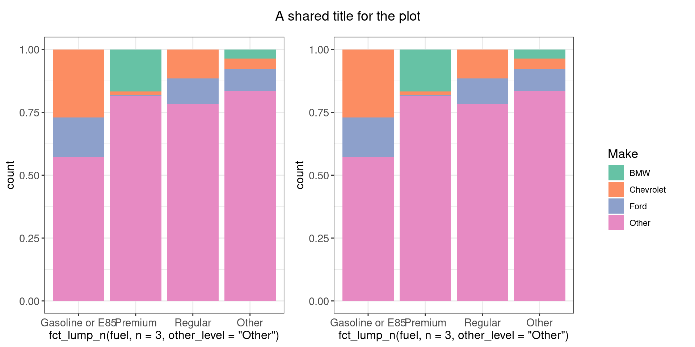
We can also add a shared plot title as a separate panel element.
my_title <- ggdraw() + draw_label("A shared title for the plot")
cowplot::plot_grid(
my_title,
cowplot::plot_grid(g1 + theme(legend.position = "none"),
g1 + theme(legend.position = "none"),
get_legend(g1),
nrow = 1, rel_widths = c(1, 1, 0.4)),
ncol = 1, rel_heights = c(0.1, 1)
)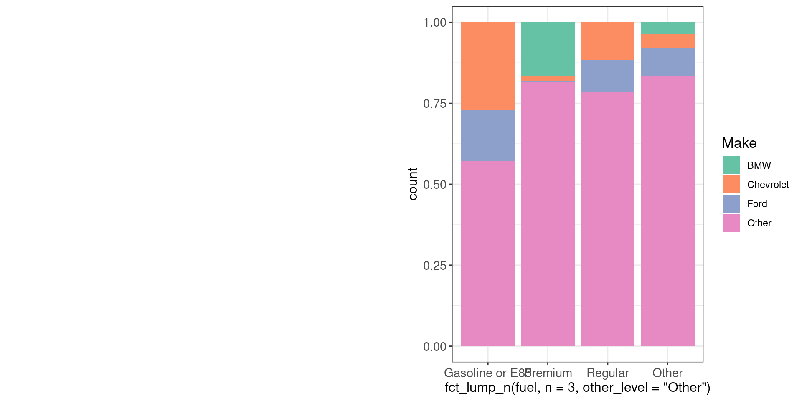
cowplot doesn’t work directly with the output of GGally::ggpairs; for example:
gp <- ggpairs(vehicles %>% dplyr::select(cty, hwy, cyl))
cowplot::plot_grid(gp, g1, align = "h", axis = "tb")Warning in as_grob.default(plot): Cannot convert object of class
ggmatrixGGally::ggmatrixS7_object into a grob.However, it works like this:
cowplot::plot_grid(ggmatrix_gtable(gp), g1, align = "h", axis = "tb")Warning: Removed 49 rows containing missing values
Removed 49 rows containing missing valuesWarning: Removed 49 rows containing missing values or values outside the scale range
(`geom_point()`).
Removed 49 rows containing missing values or values outside the scale range
(`geom_point()`).Warning: Removed 49 rows containing non-finite outside the scale range
(`stat_density()`).
patchwork
Another package that lets us combine ggplot objects is patchwork. The syntax here is a bit different - | combines plots horizontally, and / combines plots vertically.
g1 | g2g1 / g2 + theme(legend.position = "none")
(g1 / g2) | g3
We can add additional annotations (e.g., a shared title) as well:
pw <- (g1 / g2) | g3
pw + plot_annotation(
title = "Here is the title",
subtitle = "And a subtitle",
caption = "And a caption"
)
Other material, sources for some of the material presented above
- https://uc-r.github.io/ggplot
- https://exts.ggplot2.tidyverse.org/gallery/
- https://www.youtube.com/watch?v=8ikFe82Mb1I&ab_channel=R-LadiesTunis
- https://stulp.gmw.rug.nl/ggplotworkshop/advancedggplot.html#showing-all-data-in-facets
- https://stackoverflow.com/questions/61922380/preserve-location-of-missing-columns-in-combined-bar-plot
- https://lpembleton.rbind.io/ramblings/r/
- Exciting data visualizations with ggplot2 extensions
- Awesome ggplot2
Session info
sessioninfo::session_info()─ Session info ───────────────────────────────────────────────────────────────
setting value
version R version 4.5.2 (2025-10-31)
os Ubuntu 24.04.3 LTS
system x86_64, linux-gnu
ui X11
language (EN)
collate C.UTF-8
ctype C.UTF-8
tz UTC
date 2025-11-24
pandoc 3.1.11 @ /opt/hostedtoolcache/pandoc/3.1.11/x64/ (via rmarkdown)
quarto 1.8.26 @ /usr/local/bin/quarto
─ Packages ───────────────────────────────────────────────────────────────────
package * version date (UTC) lib source
ash 1.0-15 2015-09-01 [1] CRAN (R 4.5.2)
bayestestR 0.17.0 2025-08-29 [1] CRAN (R 4.5.2)
circlize * 0.4.16 2024-02-20 [1] CRAN (R 4.5.2)
cli 3.6.5 2025-04-23 [1] CRAN (R 4.5.2)
codetools 0.2-20 2024-03-31 [2] CRAN (R 4.5.2)
colorspace * 2.1-2 2025-09-22 [1] CRAN (R 4.5.2)
correlation 0.8.8 2025-07-08 [1] CRAN (R 4.5.2)
cowplot * 1.2.0 2025-07-07 [1] CRAN (R 4.5.2)
crosstalk 1.2.2 2025-08-26 [1] CRAN (R 4.5.2)
data.table 1.17.8 2025-07-10 [1] CRAN (R 4.5.2)
datawizard 1.3.0 2025-10-11 [1] CRAN (R 4.5.2)
digest 0.6.39 2025-11-19 [1] CRAN (R 4.5.2)
directlabels * 2025.6.24 2025-06-24 [1] CRAN (R 4.5.2)
dplyr * 1.1.4 2023-11-17 [1] CRAN (R 4.5.2)
effectsize 1.0.1 2025-05-27 [1] CRAN (R 4.5.2)
evaluate 1.0.5 2025-08-27 [1] CRAN (R 4.5.2)
extrafont 0.20 2025-09-24 [1] CRAN (R 4.5.2)
extrafontdb 1.1 2025-09-28 [1] CRAN (R 4.5.2)
farver 2.1.2 2024-05-13 [1] CRAN (R 4.5.2)
fastmap 1.2.0 2024-05-15 [1] CRAN (R 4.5.2)
forcats * 1.0.1 2025-09-25 [1] CRAN (R 4.5.2)
fueleconomy * 1.0.0 2020-03-23 [1] CRAN (R 4.5.2)
generics 0.1.4 2025-05-09 [1] CRAN (R 4.5.2)
GGally * 2.4.0 2025-08-23 [1] CRAN (R 4.5.2)
ggalt * 0.6.1 2025-11-24 [1] Github (hrbrmstr/ggalt@8941f8c)
gghighlight * 0.5.0 2025-06-14 [1] CRAN (R 4.5.2)
ggnewscale * 0.5.2 2025-06-20 [1] CRAN (R 4.5.2)
ggplot2 * 4.0.1 2025-11-14 [1] CRAN (R 4.5.2)
ggrepel * 0.9.6 2024-09-07 [1] CRAN (R 4.5.2)
ggridges * 0.5.7 2025-08-27 [1] CRAN (R 4.5.2)
ggsignif * 0.6.4 2022-10-13 [1] CRAN (R 4.5.2)
ggstats 0.11.0 2025-09-15 [1] CRAN (R 4.5.2)
ggstatsplot * 0.13.3 2025-10-05 [1] CRAN (R 4.5.2)
ggtext * 0.1.2 2022-09-16 [1] CRAN (R 4.5.2)
GlobalOptions 0.1.2 2020-06-10 [1] CRAN (R 4.5.2)
glue 1.8.0 2024-09-30 [1] CRAN (R 4.5.2)
gridtext 0.1.5 2022-09-16 [1] CRAN (R 4.5.2)
gtable 0.3.6 2024-10-25 [1] CRAN (R 4.5.2)
htmltools 0.5.8.1 2024-04-04 [1] CRAN (R 4.5.2)
htmlwidgets 1.6.4 2023-12-06 [1] CRAN (R 4.5.2)
httr 1.4.7 2023-08-15 [1] CRAN (R 4.5.2)
insight 1.4.2 2025-09-02 [1] CRAN (R 4.5.2)
jsonlite 2.0.0 2025-03-27 [1] CRAN (R 4.5.2)
KernSmooth 2.23-26 2025-01-01 [2] CRAN (R 4.5.2)
knitr 1.50 2025-03-16 [1] CRAN (R 4.5.2)
labeling 0.4.3 2023-08-29 [1] CRAN (R 4.5.2)
lattice 0.22-7 2025-04-02 [2] CRAN (R 4.5.2)
lazyeval 0.2.2 2019-03-15 [1] CRAN (R 4.5.2)
lifecycle 1.0.4 2023-11-07 [1] CRAN (R 4.5.2)
magrittr 2.0.4 2025-09-12 [1] CRAN (R 4.5.2)
maps 3.4.3 2025-05-26 [1] CRAN (R 4.5.2)
MASS 7.3-65 2025-02-28 [2] CRAN (R 4.5.2)
Matrix 1.7-4 2025-08-28 [2] CRAN (R 4.5.2)
mgcv 1.9-3 2025-04-04 [2] CRAN (R 4.5.2)
nlme 3.1-168 2025-03-31 [2] CRAN (R 4.5.2)
paletteer 1.6.0 2024-01-21 [1] CRAN (R 4.5.2)
parameters 0.28.2 2025-09-10 [1] CRAN (R 4.5.2)
patchwork * 1.3.2 2025-08-25 [1] CRAN (R 4.5.2)
pillar 1.11.1 2025-09-17 [1] CRAN (R 4.5.2)
pkgconfig 2.0.3 2019-09-22 [1] CRAN (R 4.5.2)
plotly * 4.11.0 2025-06-19 [1] CRAN (R 4.5.2)
proj4 1.0-15 2025-03-21 [1] CRAN (R 4.5.2)
purrr 1.2.0 2025-11-04 [1] CRAN (R 4.5.2)
quadprog 1.5-8 2019-11-20 [1] CRAN (R 4.5.2)
R6 2.6.1 2025-02-15 [1] CRAN (R 4.5.2)
RColorBrewer * 1.1-3 2022-04-03 [1] CRAN (R 4.5.2)
Rcpp 1.1.0 2025-07-02 [1] CRAN (R 4.5.2)
RcppParallel 5.1.11-1 2025-08-27 [1] CRAN (R 4.5.2)
rematch2 2.1.2 2020-05-01 [1] CRAN (R 4.5.2)
rlang 1.1.6 2025-04-11 [1] CRAN (R 4.5.2)
rmarkdown 2.30 2025-09-28 [1] CRAN (R 4.5.2)
rstantools 2.5.0 2025-09-01 [1] CRAN (R 4.5.2)
Rttf2pt1 1.3.14 2025-09-26 [1] CRAN (R 4.5.2)
S7 0.2.1 2025-11-14 [1] CRAN (R 4.5.2)
scales * 1.4.0 2025-04-24 [1] CRAN (R 4.5.2)
scattermore * 1.2 2023-06-12 [1] CRAN (R 4.5.2)
sessioninfo * 1.2.3 2025-02-05 [1] CRAN (R 4.5.2)
shape 1.4.6.1 2024-02-23 [1] CRAN (R 4.5.2)
statsExpressions 1.7.1 2025-07-27 [1] CRAN (R 4.5.2)
tibble 3.3.0 2025-06-08 [1] CRAN (R 4.5.2)
tidyr * 1.3.1 2024-01-24 [1] CRAN (R 4.5.2)
tidyselect 1.2.1 2024-03-11 [1] CRAN (R 4.5.2)
utf8 1.2.6 2025-06-08 [1] CRAN (R 4.5.2)
vctrs 0.6.5 2023-12-01 [1] CRAN (R 4.5.2)
viridisLite 0.4.2 2023-05-02 [1] CRAN (R 4.5.2)
withr 3.0.2 2024-10-28 [1] CRAN (R 4.5.2)
xfun 0.54 2025-10-30 [1] CRAN (R 4.5.2)
xml2 1.5.0 2025-11-17 [1] CRAN (R 4.5.2)
yaml 2.3.10 2024-07-26 [1] CRAN (R 4.5.2)
zeallot 0.2.0 2025-05-27 [1] CRAN (R 4.5.2)
[1] /home/runner/work/_temp/Library
[2] /opt/R/4.5.2/lib/R/library
* ── Packages attached to the search path.
──────────────────────────────────────────────────────────────────────────────